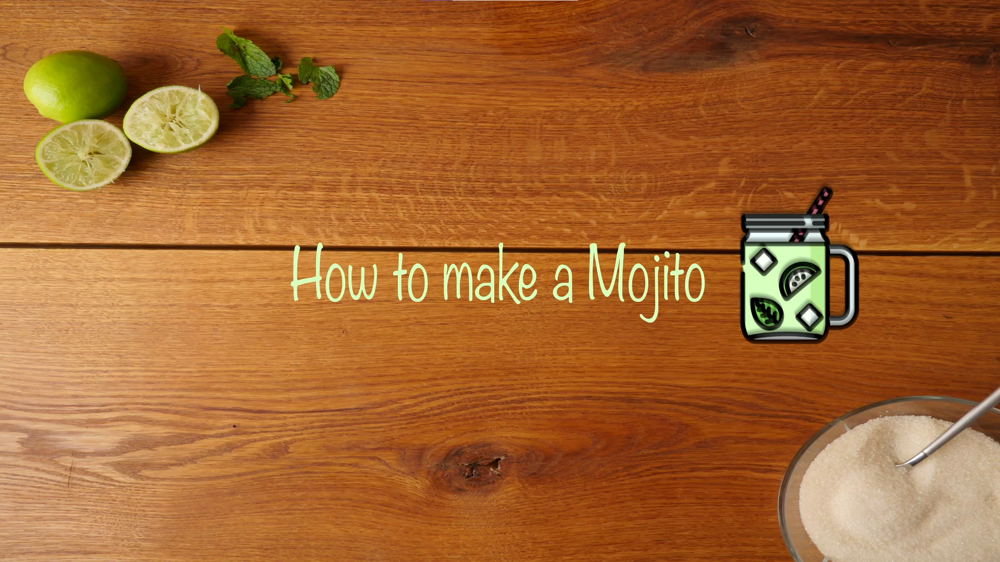
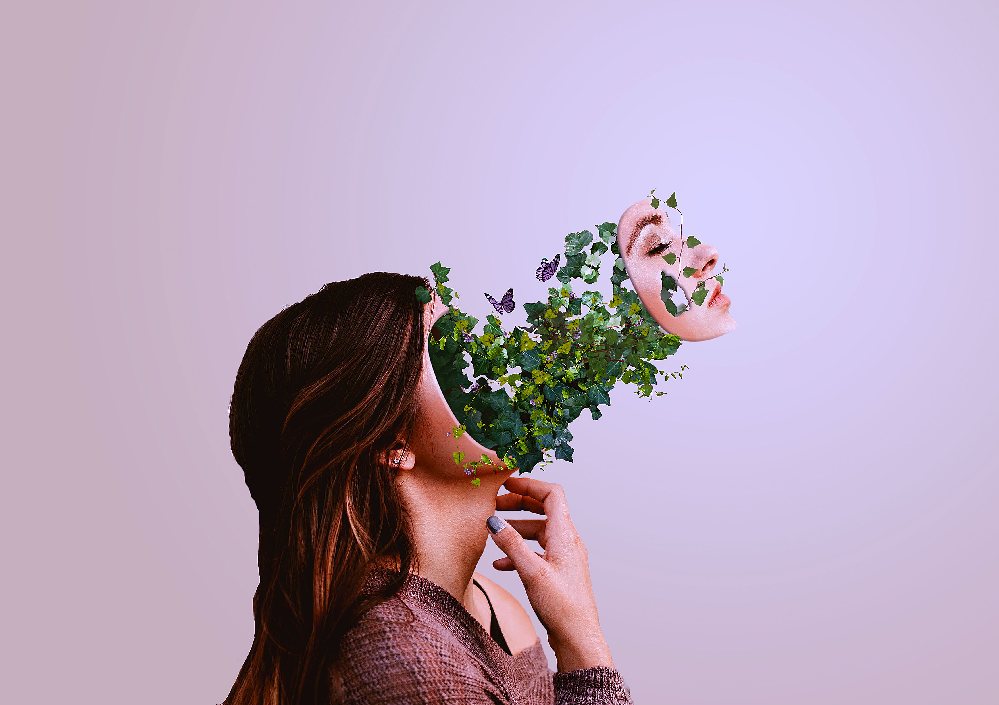
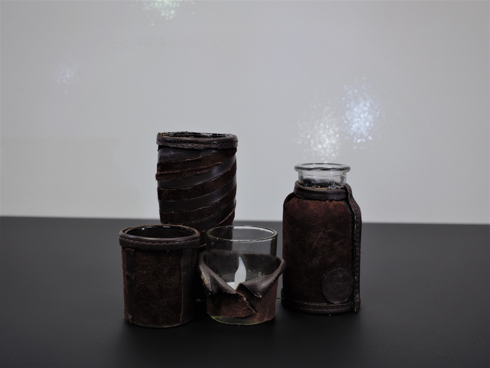
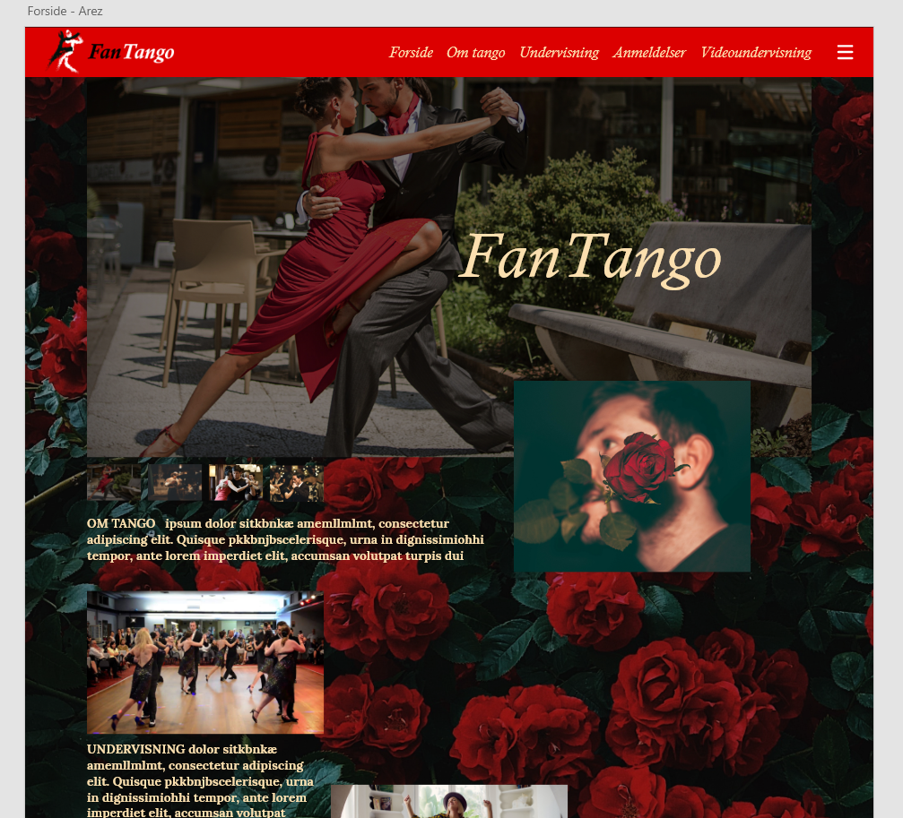
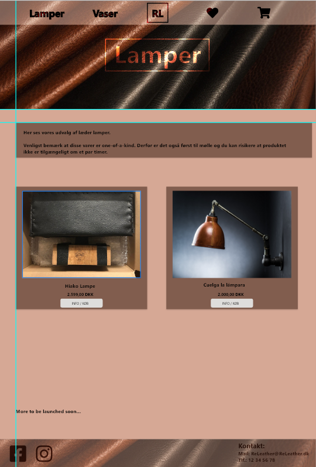
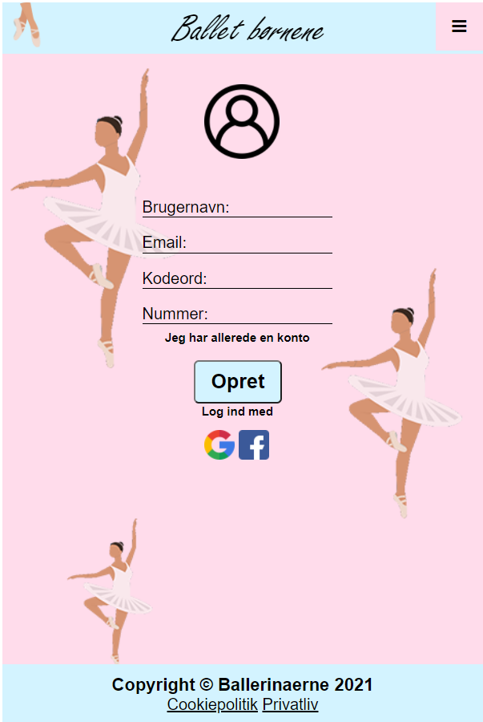

Det her er et video projekt, hvor vi fik opgaven om at lave en how to video, udfording var da det her et bredt emne, og finde på hvilke how to video vi skal lave.
så vi kom frem til how to make a Mojito med et ekstra twist so i kan se i slutning af videon. jeg havde en stor rolle i det her projekt da jeg har lidt erfaing med at filme, samt hvilke vinkler og bevæglser er gode.
Her brugt vi så Adobe AfterEffect til at klip det hele sammen.

I min fritid er jeg glad for at tage billeder samt rediger i photoshop, her kan i se et par stykker af mit photoshop arbejde, hvis i klikker på billedet.
jeg bruger nemlig også meget tid på at se videor om photoshop, jeg kan selv se min udvikling. Man kan aldrig stoppe med at lære noget nyt på photoshop,
det hadler bare om og være kreativ.

Iværksætter projekt, hvor vi skulle finde på en idesom vi skulle byg en virksomhed for.
Og deltage i en konkurrence. vores ide blev til ReLeather,da vi tager gamle ledermøbler fra genbrugspladsen,
laver dem om til vaser og lamper. så vi går op i bærygtighed. til konkurrencen vandt vi bedste process.
min role havde stor betydning da jeg stod for det meste i at byge det prtotypen fysisk i hånden(lampe og vaser)

2.del af Dans Dans Dans projektet, her var vores opgave at,
at arbejde videre med en af de andre gruppers ide, her brugt jeg meget tid i AdobeXD
for at lave wireframes, ockups, og prototyper. I det her projekt lært vi også meget om farver og skrift typer,
så vi lavet også moodboards og usabiltytest på prototypen. Så fik vi kodet deres hjemmeside fra mobil format til
PC størlse med de ændringer vi havde lavet i design.

2. Del a Releather projektet da vores opgave var at arbejde med SoMe, og lave nogle opslag på social media omkring vores prudukt, og
i det her projekt lærte vi om Git da det var en af kravene, da vi skulle arbjede sammen på kode til hjemmesiden.

Dans Dans Dans et projekt hvor vores opgave var at finde en målgruppe, og lave en hjemmeside i mobil format til dem.
min rolle her var at jeg godt og grundit lavet en masse deskresearch, og der efter ringe rundt til nogle ballet skoler, smat skrive med nogle der går til ballet.
ud fra det fik vi en del info og kom frem til lave personar, og ud fra dem designet vi og lavet den her hjemmeside til vores målgrppe som er børn med særlig behov fx
som børn med ADHD,balet vil hjælpe dem med selv kontrol.